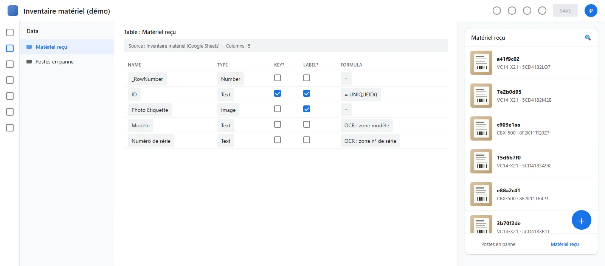

Stage de fin d'études, mission interne, en production
Photographier l'étiquette plutôt que recopier le numéro
Le matériel reçu au bureau était inventorié à la main : on recopiait le modèle et le numéro de série du carton vers un tableur. J'ai construit une application AppSheet qui lit l'étiquette par reconnaissance optique. Elle est en production depuis le 12 juin 2026.
Contexte et objectif
Avant déploiement, chaque appareil reçu doit être inventorié. On relevait le modèle et le numéro de série sur l'étiquette du carton, puis on les recopiait dans un tableur : trois à cinq minutes par appareil, avec un risque d'erreur élevé, car ces numéros sont longs, alphanumériques et sans redondance.
Le vrai coût n'est pas la frappe. Une erreur de transcription ne se voit pas quand on la commet ; elle apparaît des semaines plus tard, quand on cherche un équipement introuvable sous cette référence. L'objectif : supprimer la saisie manuelle du modèle et du numéro de série.
Mon rôle
J'ai repéré cet irritant en rencontrant un à un les membres de l'entreprise au début de mon stage, en écoutant décrire la réception du matériel. La demande a ensuite été portée par les responsables commercial et technique. J'ai conçu, construit et mis en service l'application, et rédigé un support pas à pas pour la présenter à l'équipe.
Ce que j'ai fait
Un gabarit plutôt qu'une lecture libre
La fiabilité repose sur une particularité du contexte : les étiquettes d'un même constructeur ont toutes la même disposition. J'ai vérifié cette régularité sur les cartons en stock avant de construire quoi que ce soit, puis calibré les zones de capture sur ces étiquettes. C'est nettement plus fiable qu'une extraction de texte libre, justement parce que l'approche exploite une régularité connue à l'avance.
La difficulté venait de la densité des étiquettes : sur un carton de Chromebook, le numéro de série côtoie une référence produit, un code-barres, un numéro de lot et des mentions réglementaires, dans la même police, à quelques millimètres. Une zone mal délimitée capture le mauvais champ, et l'erreur ne se voit pas puisque le format reste plausible.
Essayez : le gabarit de lecture
La zone verte lit le numéro de série. Faites-la glisser sur l'étiquette (souris, doigt ou flèches du clavier), puis changez de carton : même constructeur, puis un autre.
Lu par l'OCR
Pensée pour l'entrepôt, pas pour le bureau
L'application s'utilise debout, souvent avec une seule main libre. J'ai donc réduit le formulaire à une action : un bouton ouvre la caméra, on valide après extraction. Le champ du numéro de série lit aussi directement un code-barres quand l'étiquette en porte un. Une seconde vue recense les postes en panne, pour que le même outil serve au suivi du matériel défectueux.
Pas de nouveau périmètre de sécurité
Les photos d'étiquettes sont stockées dans l'espace Drive de l'organisation, soumis aux règles d'accès déjà en place. Le choix était délibéré : ne pas créer un nouvel espace à administrer et à sécuriser. La photo est conservée telle quelle, ce qui permet de vérifier après coup ce que la reconnaissance a lu.

Résultats vérifiables
- ConstatéApplication déployée le 12 juin 2026, en production chez Good iD à mon départ.
- Compté81 équipements enregistrés, d'après la base elle-même.
- EstiméEnviron 70 % de temps de saisie en moins par appareil. Estimation faite après coup, sur quelques cartons, sans état de référence : ce n'est pas une mesure.
- ConstatéLa transcription manuelle disparaît comme source d'erreur. Je n'ai pas comparé les valeurs extraites aux étiquettes une par une, donc je ne revendique pas un taux d'erreur nul.
Limites et ce que j'en retiens
- Mesurer avant, pas après. J'ai chronométré la saisie après avoir livré, alors que le gain principal se trouve dans les erreurs évitées, que je n'ai ni mesurées ni estimées. Une demi-journée de mesure de l'existant (durées, erreurs relevées dans l'historique de l'inventaire) aurait transformé une affirmation en résultat. Depuis, je fixe les critères de réussite avant de développer.
- Une contrainte découverte à l'usage. La reconnaissance se fait dans le cloud : sans réseau, l'application ne fonctionne pas, et c'est justement dans les locaux de stockage que la couverture est la plus faible. Une analyse des conditions réelles d'emploi l'aurait révélé avant le développement.
- Un modèle de données à revoir. Deux listes séparées (en service, en panne) plutôt qu'un champ d'état sur un enregistrement unique : c'était rapide à mettre en place, mais cela coupe l'historique d'un appareil. Je choisirais aujourd'hui le champ d'état.
- Transmission. Aucun repreneur désigné ni note de maintenance à mon départ ; j'ai seulement ouvert des accès en modification à l'équipe.